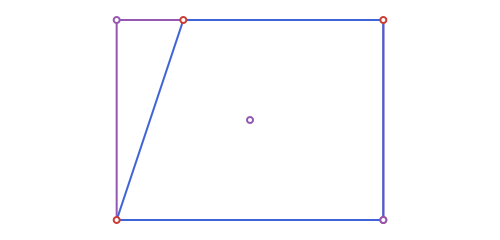
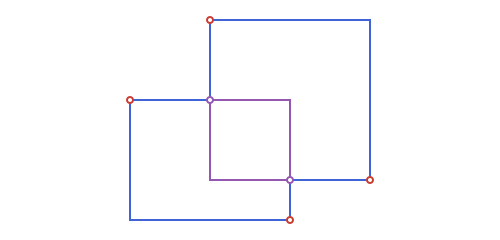
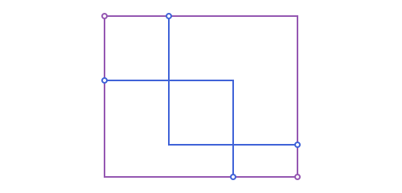
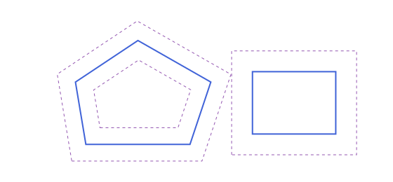
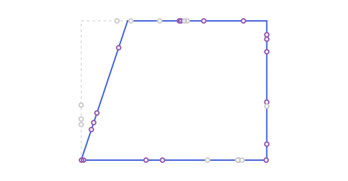

Polygons: Bounding Boxes
The polygon from Polygons: Measurements & Operations:
using Apollonius
pg = APStraightNgon([APPoint(0.0, 0.0), APPoint(4.0, 0.0), APPoint(4.0, 3.0), APPoint(1.0, 3.0)])Bounding boxes
APBoundingBox is a separate, minimal type (just two points, .min and .max) for when a full polygon is more machinery than you need (a quick overlap test, a viewport, a spatial-indexing key). It has constructors from a vector of points, or directly from most shapes in the package (APSegment, APTriangle, APPolygon, APCircle2, ...):
bb = APBoundingBox(pg) # same as APBoundingBox(vertices(pg))
bb.min, bb.max([0.0, 0.0], [4.0, 3.0])bbox_width(bb), bbox_height(bb) # 4.0, 3.0
bbox_center(bb) # [2.0, 1.5]
bbox_diagonal(bb) # 5.0
bbox_aspect_ratio(bb) # width / height1.3333333333333333
Translating (+/- an APPoint) and scaling (* a real number) an APBoundingBox both return a new, still-valid APBoundingBox: scaling by a negative factor still produces min <= max correctly, by re-sorting the two scaled corners rather than assuming the sign of the factor.
Unlike everything in the APPolygon family, APBoundingBox deliberately sits outside the APObject hierarchy's region branch and has no rotate/reflection methods: an arbitrary rotation or reflection wouldn't generally produce another axis-aligned box, only a rotated rectangle, which isn't what this type represents. Translation and uniform scaling about the origin are the only transforms that always preserve that invariant, so those are what's supported (+/-/* above, rather than rotate/reflection/homothety).
APPoint(1.0, 1.0) in bb # containment, boundary included
bb2 = APBoundingBox(APPoint(2.0, 1.0), APPoint(6.0, 5.0))
bboxes_intersect(bb, bb2) # true: they overlap
bbox_intersection(bb, bb2) # the overlapping region itselfAPBoundingBox([2.0, 1.0] .. [4.0, 3.0])
distance(p, bb) has the same mode = :region/:boundary pair as distance(p, pg::APPolygon) above: 0.0 from inside with the default :region, or always the distance to the box's edge with :boundary:
distance(APPoint(1.0, 1.0), bb) # 0.0: inside bb
distance(APPoint(1.0, 1.0), bb; mode=:boundary) # > 0.0: distance to the nearest edge1.0bboxes_intersect treats touching (sharing just an edge or corner) as intersecting. bbox_intersection returns nothing instead of a degenerate box when they don't overlap at all.
bbox_union is the other direction: the smallest box containing both, always defined (unlike the intersection, a/b don't need to overlap):
bbox_union(bb, bb2)APBoundingBox([0.0, 0.0] .. [6.0, 5.0])
Not everything has a finite box to report. APPoint gets a real but degenerate (zero-size) box at its own location (a point is a position, so it can still grow a union), while a plain number, an APVector (a direction, not a location), and any unbounded curve/region (APLine, APRay, APAngle2, APHalfPlane2, APStrip2) have none at all. APBoundingBox returns the special empty box, APBoundingBox(), for these, the identity element for bbox_union: unioning it with anything just returns the other box unchanged, and isempty tells the two apart:
isempty(APBoundingBox(5.0)), isempty(APBoundingBox(APLine(APPoint(0.0, 0.0), APPoint(1.0, 1.0))))(true, true)bbox_union(APBoundingBox(5.0), bb) == bbtrueThis is what lets @boundingbox/@prepare_to_picture (see Transforming in Bulk: Macros) call APBoundingBox on every value named in a block (construction helpers included) without needing to special-case the ones that were never meant to be drawn or sized.
Boxes from a center and a size
APBoundingBox(center, width, height) builds the box with the given center and size, and inflate(bb, margin) grows a box by margin on every side (or by mx and my on the two directions), or shrinks it when negative. An empty box stays empty:
bx = APBoundingBox(APPoint(1.0, 1.0), 4.0, 2.0)
bx, inflate(bx, 1.0), inflate(bx, 1.0, 0.5)(APBoundingBox([-1.0, 0.0] .. [3.0, 2.0]), APBoundingBox([-2.0, -1.0] .. [4.0, 3.0]), APBoundingBox([-2.0, -0.5] .. [4.0, 2.5]))Offsetting a polygon
offset_polygon(pg, d) is the polygon parallel to pg at distance d: outward for a positive d, inward for a negative one. Each side moves along its normal, and every new vertex is where two neighbouring moved sides meet. A concave polygon, or an inward offset larger than the polygon, can cross itself. To round the corners instead, see round_corners in Rounding a corner.
sq_o = APStraightNgon([APPoint(0.0, 0.0), APPoint(4.0, 0.0), APPoint(4.0, 4.0), APPoint(0.0, 4.0)])
area(offset_polygon(sq_o, 1.0)), area(offset_polygon(sq_o, -1.0))(36.0, 4.0)
Random points on a perimeter
rand draws a uniformly random point on a polygon's or a bounding box's own perimeter, never its interior (see Points, Lines & Rays: Special Points & Curves for the general story across every shape in the package): each side is picked with probability proportional to its own length, then a point on that side uniformly, so the result is uniform along the whole boundary, not just uniform-per-side:
p = rand(pg)
point_in_polygon(p, pg) # true: on the boundary, which counts as "in" by default
pb = rand(bb)
pb in bb # same idea for a bounding box's own edgetrue